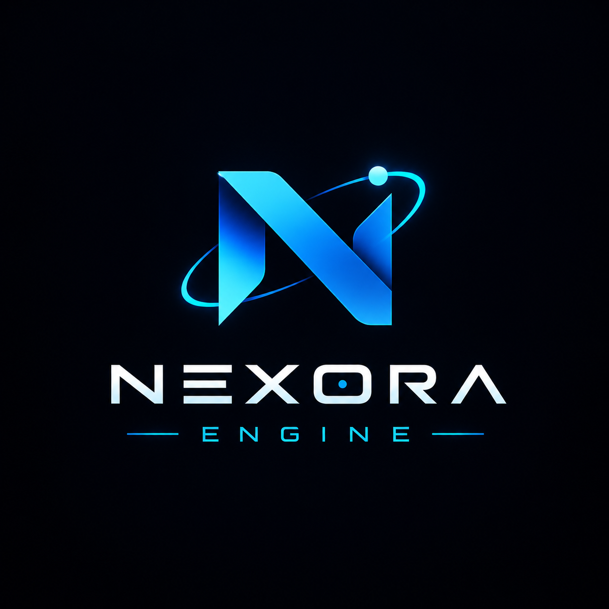

NEXORA Engine
Engine v3.2.4 with persistent memory, chat logging, and smart history capabilities.

NEXORA ENGINE
The technological foundation of NEXORA's intelligent systems.
NEXORA Engine Core ready.
Enter a research command to begin.
01 — OVERVIEW
NEXORA Engine is the core technology and research initiative behind NEXORA's intelligent systems. It focuses on developing foundational engine architecture, persistent memory, and neural network experimentation.
02 — CORE SYSTEMS
NEXORA Engine and Neural Core represent two connected components of NEXORA's ongoing technology development.
Engine v3.2.4 with persistent memory, chat logging, and smart history capabilities.
Neural Core v1.9.8 for neural network training, inference, and model testing.
Exploring neural architectures, learning systems, and the foundations of future NEXORA technology.
03 — TECHNICAL DIRECTION
NEXORA Engine focuses on developing practical foundations for intelligent systems through software engineering, neural network experimentation, and continuous research.
Developing the core engine with persistent memory, chat logging, and smart history functionality.
Experimenting with a 2–8–1 neural network architecture, ReLU activation, training, and inference.
Building a foundation for continued research and future intelligent technology within NEXORA.
04 — DEVELOPMENT STATUS
NEXORA Engine v3.2.4 and Neural Core v1.9.8 are part of NEXORA's ongoing technology research and development. The project continues to evolve through engineering, experimentation, and testing.